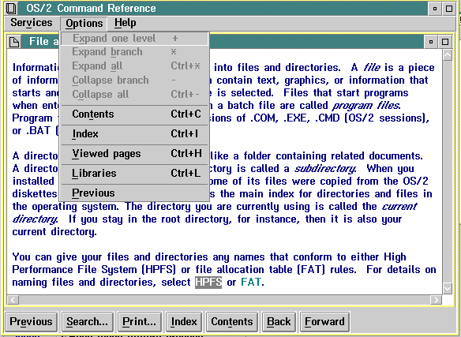

Selecting Options displays the menu shown in the following figure.

Options Menu
The first five choices are active when the Contents window is active. If the Contents window is not active, these choices are dimmed. These choices control how the table of contents will be displayed.
A tree-structured table of contents is created if more than one heading level is specified with IPF heading tags when the windows are created. (For a description of heading tags, see Headings.)
If there are additional entries under a heading, "+" appears to the left of the entry. When an entry is expanded one level, the next level of entries subordinate to the selected entry is displayed, and the "+" is replaced by a "-". The user can click on the "+" or "-" symbols to expand or contract the contents.